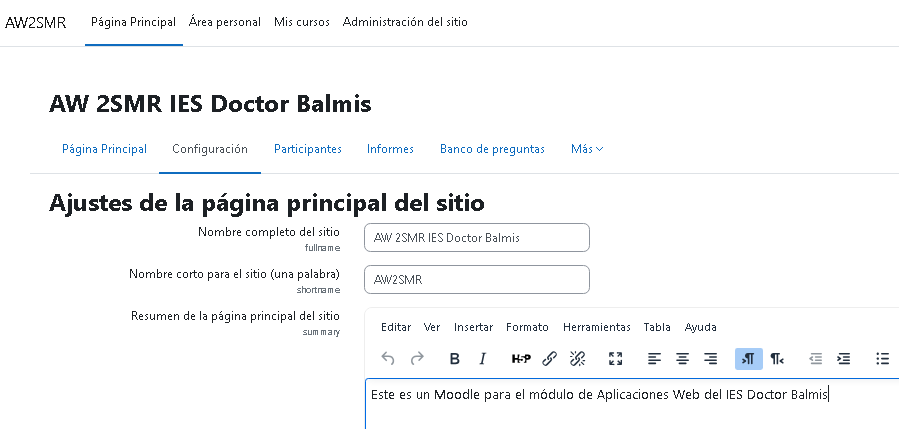
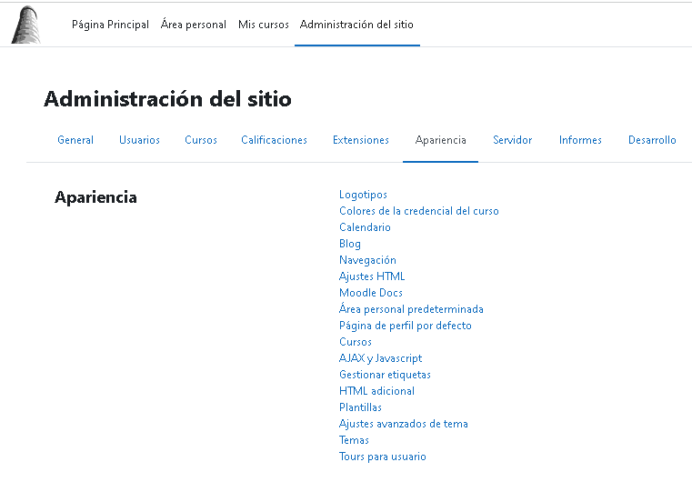
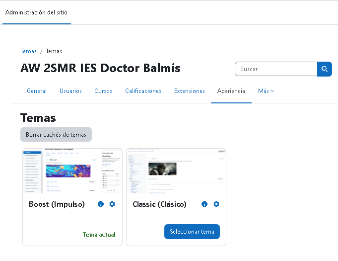

Sistemas de gestión de aprendizaje
Resultados de Aprendizaje y Criterios de Evaluación
RA2. Instala sistemas de gestión de aprendizaje a distancia, describiendo la estructura del sitio y la jerarquía de directorios generada.
Criterios de evaluación:
a) Se ha reconocido la estructura del sitio y la jerarquía de directorios generada.
b) Se han realizado modificaciones en la estética o aspecto del sitio.
c) Se han manipulado y generado perfiles personalizados.
d) Se ha comprobado la funcionalidad de las comunicaciones mediante foros, consultas, entre otros.
e) Se han importado y exportado contenidos en distintos formatos.
f) Se han realizado copias de seguridad y restauraciones.
g) Se han realizado informes de acceso y utilización del sitio.
h) Se ha comprobado la seguridad del sitio.
Contenidos
Sistemas de gestión de aprendizaje a distancia:
– Conceptos básicos. Tipos y características.
– Elementos lógicos: comunicación, materiales y actividades.
– Instalación en sistemas operativos libres y propietarios.
– Modos de registro. Interfaz gráfico asociado.
– Personalización del entorno. Navegación y edición.
– Creación de cursos siguiendo especificaciones.
– Gestión de usuarios y grupos.
– Activación de funcionalidades.
– Realización de copias de seguridad y su restauración.
– Realización de informes.
– Elaboración de documentación orientada a la formación de los usuarios.
Introducción
La educación a distancia ha dado un salto cualitativo y cuantitativo en los últimos años a raíz del espectacular crecimiento en el uso de Internet y la consolidación de los portales web de aprendizaje. Actualmente puede competir en igualdad de condiciones con los sistemas tradicionales de aprendizaje presencial, ofrece más flexibilidad y permite llegar a gente que de otra manera no tendría acceso.
No solamente Internet, sino una nueva dimensión web donde los usuarios colaboran, comparten, participan y crean contenido. Así pues, aquí es donde se enmarcan estos portales de aprendizaje, donde profesorado, alumnado y usuarios comparten un espacio común con gran diversidad de recursos para aprender, comunicarse, opinar o trabajar en grupo.
Es, pues, evidente, la importancia de conocer las posibilidades que ofrecen estos entornos para la formación. Aprender a instalarlos, dotarlos de una imagen personalizada, gestionar la seguridad y añadir nuevas funcionalidades, son algunos de los temas que trabajaréis.
Moodle es un ejemplo de portal de aprendizaje, y se ha convertido en el estándar de facto entre los programas de este tipo; es libre y gratuito, y tiene detrás una gran comunidad muy activa de usuarios.
Una de las primeras tareas a las que se enfrenta el administrador cuando configura el portal es modificar su aspecto, asegurarse de que tiene una imagen cuidada, agradable y adecuada con la organización que representa.
Es habitual que el sistema mismo ofrezca diversos temas predefinidos para personalizar la apariencia del portal. Moodle tiene muchos, y además permite que los usuarios puedan elegir temas personales para ellos y a los profesores para sus cursos.
Todo esto se puede hacer de manera fácil y sencilla, pero también, para los más detallistas y exigentes, siempre hay la posibilidad de crear temas nuevos totalmente personalizados; eso sí, son necesarios conocimientos un poco más avanzados.
La primera página del portal es lo primero que verán los usuarios cuando accedan, y hay que cuidarla especialmente; por ejemplo, se puede decidir mostrar un formulario para la entrada de los usuarios o presentar directamente todos los contenidos abiertamente a todos.
Definir los diferentes idiomas disponibles para el portal también es importante; hay que conocer las necesidades de los futuros usuarios, entender quién trabajará y evitar que el idioma se convierta en un impedimento. Todos los portales web de aprendizaje están traducidos a muchos idiomas.
La manera como los usuarios acceden al sistema y cómo se verifican sus datos se llama autenticación y también se ha de configurar; se pueden dar dos situaciones diferenciadas pero complementarias: que los usuarios ya estén en algún sistema previo y se aproveche esta información para el acceso al sistema, ya sea por medio de una base de datos o de un servidor de seguridad externo, o bien que todavía no existan, y en este caso hay que ofrecerles los mecanismos para que puedan acceder, que el administrador les dé de alta o que los usuarios mismos indiquen sus datos y los confirmen por medio de correo, por ejemplo.
Así el sistema contiene información de cada uno de los usuarios, datos personales como el nombre, apellidos o dirección electrónica, la ciudad y el país donde vive y los intereses y aficiones; algunos de estos datos son obligatorios y otros opcionales y se agrupan en lo que se llama perfil de usuario.
Todo sistema que contenga información personal debe ofrecer también herramientas para garantizar la confidencialidad. En Moodle hay gran cantidad de parámetros de seguridad que se pueden afinar para proteger el portal del exterior; en la mayoría de situaciones la configuración por defecto ofrece suficientes garantías, pero se puede mejorar hasta extremos casi paranoicos.
La otra vertiente de la seguridad es la interna del sistema; los diferentes usuarios que conviven tienen tareas y funciones diferentes, y se ha de garantizar que cada uno de estos usuarios solo pueda hacer aquello que necesita. En este sentido se definen los roles, que son conjuntos de permisos y prohibiciones que se agrupan bajo un nombre y que se asignan a los usuarios; así los usuarios pueden hacer y deshacer en función de los roles a los que pertenezcan. Moodle ofrece unos roles predefinidos que en general son suficientes, de los cuales destacan el administrador, el profesor y el alumno.
El sistema de roles es complejo: un rol define si se puede hacer o no cualquiera de las funcionalidades o capacidades disponibles en el portal. Además, los roles se pueden definir en contextos concretos, como por ejemplo en todo el sistema, en un curso o en un foro, y los usuarios pueden tener diversos roles simultáneamente. Para resolver los conflictos que se producen se establece una jerarquía de contextos y de permisos que permite identificar unívocamente siempre si un usuario puede hacer algo.
Además de los roles, el otro pilar de los portales web de aprendizaje son los cursos; son las unidades formativas del portal, agrupan alumnos y profesores en torno a un tema y disponen de las herramientas para acompañar el proceso de enseñanza y aprendizaje.
Moodle organiza los cursos en categorías que permiten agrupar y estructurar el portal; internamente se pueden organizar de diversas maneras según convenga para su desarrollo: por temas, por semanas o en torno a un foro.
Los alumnos se inscriben en los cursos, y hay diferentes formas de inscripción; por ejemplo, el profesor puede escoger los alumnos, o bien los alumnos se inscriben al curso ellos mismos, siempre que sea un curso abierto a inscripciones o conozcan la clave para inscribirse. Moodle también proporciona herramientas para gestionar cursos de pago, por medio de conexiones a entidades de comercio electrónico, como por ejemplo PayPal.
El profesorado es quien administra y organiza sus cursos y añade el contenido, tanto recursos como actividades. También decide qué bloques hay y dónde se muestran, hace el seguimiento de las tareas encomendadas, modera los foros y en general es el responsable de todo lo que pasa dentro del curso.
Mientras el portal está en marcha, los administradores son los encargados de velar porque todo funcione correctamente, han de atender las necesidades de los usuarios para mejorar y ampliar el servicio, prever posibles fuentes de problemas y tomar las medidas preventivas necesarias y conocer y usar las herramientas de control y seguimiento que ofrece el sistema.
Ademñas siempre que se planifiquen tareas de mantenimiento en el sistema es una buena práctica comunicarlo con antelación a los usuarios.
El portal Moodle se estructura en módulos; cada módulo aporta funcionalidades que se pueden activar y desactivar en cualquier momento. Hay gran cantidad de módulos, y constantemente en salen de nuevos y aparecen nuevas versiones mejoradas de los existentes.
Hay módulos de muchos tipos diferentes, pero principalmente dos de destacados: los módulos de actividad y los bloques. Los módulos de actividad aportan nuevos contenidos para añadir a los cursos, por ejemplo una actividad que permita crear juegos pedagógicos. Los bloques son los recuadros que hay en los laterales del portal e incluyen funcionalidades genéricas y de utilidad.
Antes de instalar cualquier módulo nuevo, hay que leer atentamente la documentación y comprobar que es compatible con la versión del portal que está instalada. Al mismo tiempo también es posible en cualquier momento actualizar el portal mismo a una versión más reciente de manera rápida y sencilla para poder disfrutar de todas las nuevas funcionalidades que van apareciendo.
Otra de las tareas que se han de hacer durante la explotación del portal son las copias de seguridad; es indispensable, y no se puede correr el riesgo de perder todo el trabajo de los usuarios. Hay que analizar y decidir la periodicidad, el momento y la ubicación de estas copias; el proceso de copia de seguridad es lento y consume recursos, y por la misma razón tampoco es aconsejable que se ejecute en momentos de mucho uso del sistema. Por otro lado, los archivos de copias de seguridad han de estar disponibles y en un soporte físico diferente del del portal.
El Moodle proporciona herramientas para hacer copias de seguridad de los cursos a los administradores y a los profesores. Aunque es una herramienta útil que además puede servir para exportar cursos entre diferentes portales, en ningún caso puede ser este el único sistema de copias de todo el sistema, primero porque no es completo, y después porque es más costoso que los sistemas de copia tradicionales.
Las copias de seguridad de los cursos que se hacen desde el portal incluyen toda la información del curso, la estructura, los recursos y actividades, los datos de los usuarios, sus roles y el registro de sus acciones, las calificaciones y los documentos. El sistema permite decidir qué es lo que se incluye en la copia.
Por otro lado, para hacer una copia de todo el sistema hay que conocer cómo se organiza el portal, su estructura física. El portal se divide en tres áreas de información que se pueden tratar de manera diferenciada a la hora de hacer las copias: el software, los datos de los cursos y la base de datos.
El software se encuentra en el directorio /moodle, y en general solo hay que guardar lo que se haya modificado para personalizar el entorno, archivos de configuración o temas añadidos. Los datos de los cursos se encuentran en el directorio /moodledata, que contiene todo el trabajo de los usuarios; por tanto, hay que guardarlo entero. La base de datos, que se llama moodle, contiene la información que gestiona y relaciona el portal y su contenido, y también se ha de copiar entera.
Las herramientas para hacer las copias de todo el sistema se han de escoger en función de la situación; por ejemplo, si se tiene acceso físico al servidor donde se aloja el portal se podrán copiar directamente los archivos a una unidad externa extraíble con instrucciones del sistema operativo, pero si solo se dispone de acceso remoto se hará servir algún sistema de acceso o transferencia remotos. Respecto a la base de datos, las herramientas para hacer las copias dependen del sistema gestor que se haga servir; cada uno proporciona las suyas.
Para hacer el seguimiento y control del portal el administrador dispone de utilidades como los informes y los registros de actividad. Los informes muestran información de manera sencilla y entendible, resumida y estructurada (en tablas o gráficos) de diversos aspectos del funcionamiento y la configuración del portal, como por ejemplo, en qué momento se han hecho las copias de seguridad, si han ido bien o qué posibles errores de seguridad se han detectado y cómo solucionarlos.
Los registros de actividad presentan el detalle de las acciones de los usuarios a lo largo del tiempo en el sitio; los administradores pueden acceder a estos registros completos y los profesores solo en el contexto de sus cursos. Esto permite ver qué ha hecho cada usuario en cada momento y dónde para hacer el seguimiento o detectar malos usos, por ejemplo.
Instalación de portales web de aprendizaje
Los entornos virtuales de aprendizaje (EVA), virtual learning environment (VLE) en inglés, son programas específicamente diseñados para facilitar el aprendizaje utilizando sistemas informáticos. La mayoría de ellos trabajan en entornos web, por eso son también llamados portales web de aprendizaje.
Hay muchos entornos virtuales de aprendizaje, algunos de ellos son libres, otros de código abierto y también los hay de privativos. Algunos de estos son:
- Moodle: uno de los más extendidos con una amplia comunidad de usuarios.
Blackboard: es un conjunto de software para la gestión educativa integrada; es de propiedad y de pago. - ATutor: es una aplicación web y de código abierto para la gestión de cursos y para trabajar colaborativamente con los estudiantes.
- Claroline: plataforma web de aprendizaje virtual de código abierto, similar al ATutor con una amplia comunidad de desarrolladores y usuarios en todo el mundo.
- Google Classroom: plataforma web de aprendizaje de Google diseñada por profesores de Google Apps for Education con el objetivo de organizar las clases y facilitar la comunicación de los profesores con los estudiantes. Trabaja en conexión con otras aplicaciones de Google como Drive, agilizando la gestión de los archivos para una comunidad de estudiantes, permitiendo por ejemplo hacer una copia automática de los diferentes documentos para cada estudiante. También es capaz de gestionar la realización de tareas por parte de los estudiantes, así como su seguimiento y evaluación.
- Otras: Udeme, Edmodo, Sakai, Dokeos, etc.
Aunque sería interesante poder presentar cada uno de estos entornos virtuales, nos centraremos en la plataforma Moodle.
Entornos virtuales de aprendizaje
Los entornos virtuales de aprendizaje, llamados habitualmente portales web de aprendizaje, son programas creados para facilitar la enseñanza al mismo tiempo que permiten un aprendizaje más dinámico y flexible que los sistemas tradicionales.
Estos entornos aprovechan las ventajas que ofrecen las tecnologías de la información para permitir la comunicación entre los diferentes agentes implicados en el proceso educativo.
Info
Un entorno virtual de aprendizaje es un software basado en tecnologías web, diseñado para facilitar el proceso de aprendizaje.
Aunque un entorno virtual de aprendizaje puede aplicarse a diferentes ámbitos, lo más habitual es el ámbito educativo, tanto para centros educativos como para cursos de formación. En este sentido, la persona formadora presenta sus materiales, que pueden ser interactivos, en formato digital, y hace el seguimiento de las actividades y lleva el control de la evaluación, al mismo tiempo que está siempre en comunicación con su alumnado. Hay una gran diversidad de recursos disponibles que garantizan un proceso de aprendizaje dinámico, constructivista y ameno.
Por otro lado, el alumnado dispone de múltiples herramientas para comunicarse y colaborar, resolver dudas y trabajar cooperativamente, en general sin limitaciones horarias ni espaciales.
Siguiendo uno de los principios del constructivismo social, se sabe que los seres humanos elaboran conocimiento a partir de la relación social. Aplicando este concepto al mundo de la educación, nos encontramos que el alumnado pasa a participar de forma activa y consciente en el proceso de aprendizaje. En este sentido, las plataformas virtuales de aprendizaje favorecen que se pueda potenciar este aspecto.
La facilidad de uso de estos entornos es una de las claves de su éxito; unos recursos mínimos (un ordenador y una conexión a Internet) y unas habilidades elementales en la utilización de estas herramientas informáticas, garantizan que todo el mundo pueda tener acceso.
Moodle
Moodle es un ejemplo de entorno virtual de aprendizaje. Es un programa de código libre y gratuito, con una comunidad muy amplia de usuarios en todo el mundo. Se basa en el constructivismo social para la adquisición del conocimiento.
Recursos de los portales web de aprendizaje
Los recursos de los entornos virtuales de aprendizaje son todas aquellas herramientas que permiten a la persona formadora aportar materiales didácticos o bien crearlos para comunicar y complementar el conocimiento a su alumnado.
Estos son los algunos de los recursos que proporciona Moodle y que el profesorado, en modo edición, pueden añadir a sus cursos:
- Fichero: es un documento en cualquier formato (PDF, ODT, DOCX…): una imagen, una hoja de cálculo, un archivo de audio o vídeo…
- Carpeta: ayuda a organizar los ficheros y puede contener otras carpetas. Nos permite agrupar ficheros en una carpeta y visualizarla en el curso, reduciendo el espacio ocupado en la página principal de este, si lo comparamos con lo que ocuparía si añadiéramos cada fichero por separado como recurso del curso.
- Etiqueta: se utiliza para insertar títulos y elementos multimedia, y así organizar el resto de recursos del curso.
- Página: se trata de una página web, por tanto navegable, que el profesorado edita mediante un editor HTML.
- Libro: se utiliza para crear un conjunto de páginas organizadas en capítulos. Pueden contener texto, elementos multimedia y enlaces. Se trata de contenidos más largos que los ficheros.
- Paquete de contenido IMS: es un libro pero navegable como una página web. Resulta complejo de configurar y crear.
- URL: permite enlazar cualquier contenido de Internet.
Modo edición
El modo edición es imprescindible para modificar el contenido de los cursos. Al activarlo aparecen un conjunto de iconos asociados a cada ítem del curso y a los bloques, que nos permitirán modificar su colocación y editar los contenidos didácticos. También nos permite añadir nuevos contenidos al curso. Para activarlo o desactivarlo hay que pulsar el botón “Activa edición” o “Desactiva edición”.

Actividades de los entornos virtuales de aprendizaje
Actividades
Las actividades de los entornos virtuales de aprendizaje permiten al alumnado poner en práctica de manera interactiva los conocimientos adquiridos, comprobar su progreso, consolidar su aprendizaje, participar y trabajar en grupo.
Lenguaje HTML
HTML es el acrónimo de Hyper Text Markup Language, uno de los lenguajes más populares para la creación de páginas web.
El alumnado participa generando y entregando documentos, respondiendo a preguntas, añadiendo contenido o incluso dando su opinión.
Las personas formadoras crean actividades dirigidas al alumnado y pueden recibir el resultado para evaluarles y hacerles un seguimiento.
Hay una gran variedad de actividades diferentes. Pueden ser de dos tipos: individuales y colaborativas.
Algunos ejemplos de actividades individuales son:
- Consulta: es una pregunta y un conjunto de posibles respuestas para elegir. Permite al profesorado hacer reflexionar al estudiante o verificar su comprensión respecto a algún tema.
- Herramienta Externa: es un enlace a recursos de aprendizaje de otros sitios web que permite al alumnado interactuar para mejorar su aprendizaje.
- Encuesta: es un conjunto de preguntas que permite al profesorado recopilar datos sobre los/las estudiantes y su aprendizaje y también obtener retroalimentación respecto a su manera de enseñar.
- Lección: es una secuencia de preguntas y respuestas que permite al profesorado crear una experiencia de aprendizaje adaptativo. El sistema pregunta y el alumnado debe dar una respuesta. El itinerario que sigue está en función de las respuestas proporcionadas por el alumnado.
- Paquete SCORM: permite cargar fácilmente cualquier paquete SCORM y convertirlo en contenido del curso. Este se muestra en diferentes páginas web por las que se puede navegar.
- Cuestionario: es un conjunto de preguntas de diferentes tipologías (selección múltiple, verdadero-falso, emparejamientos, respuesta breve, numéricas) que permiten al profesorado evaluar al alumnado. El profesorado puede permitir más de un intento, las preguntas pueden salir en un orden diferente cada vez y se pueden escoger aleatoriamente de un banco de preguntas.
- Tarea: es una actividad que permite al profesorado dar instrucciones al alumnado, recoger sus trabajos entregados, evaluarlos y responderles con una retroalimentación.
Una pregunta con respuesta numérica espera que el estudiante introduzca un número permitiendo un margen de error. Se habilita un rango de posibles respuestas acertadas. Por ejemplo, si la respuesta correcta es 50 con un margen de error de 5, será correcto cualquier número entre 45 y 55.
Algunos ejemplos de actividades colaborativas son:
La palabra SCORM...
… es un acrónimo de Shareable Content Object Reference Model (modelo de referencia de objetos compartibles de contenido). Es un formato estándar consensuado de objetos de aprendizaje.
- Base de datos: permite a los participantes crear una colección de datos heterogéneos (imágenes, documentos, direcciones web, textos…) y después trabajar con ellos, por ejemplo, haciendo búsquedas y mostrando la información. Se utilizan para mantener colecciones de enlaces web, revistas, reseñas de libros y otros.
- Glosario: es una colección de términos y sus definiciones correspondientes. El glosario puede ser una actividad colaborativa si lo crea el alumnado, o bien un recurso didáctico más si lo crea el profesorado
- Taller: permite la recogida de los trabajos entregados por el alumnado y la evaluación entre ellos. La evaluación puede ser anónima y el profesorado puede indicar la rúbrica para facilitarla. El alumnado recibe dos notas, la del propio trabajo y la de la evaluación realizada.
- Wiki: permite la creación colectiva de documentos web. El alumnado edita el documento y añade, modifica o quita contenido. Se puede utilizar para que el alumnado cree sus apuntes de clase.
Roles en los portales web de aprendizaje
Un rol es una colección de permisos definida para todo el sistema que podéis asignar a los usuarios en contextos específicos. La combinación de rol y contexto define las acciones que el usuario puede hacer en las páginas. Tratándose de un entorno de aprendizaje, los roles más comunes que ofrece Moodle son el de profesor/a y estudiante además del de administrador/a para gestionar el portal.
Herramientas de comunicación en los portales web de aprendizaje
Las herramientas de comunicación en los portales web de aprendizaje son un elemento básico en el proceso de aprendizaje; la comunicación con el profesorado, las dudas que aclaran los/as compañeros/as o las discusiones y el debate son necesarios y ayudan al alumnado.
Herramientas de comunicación
Las herramientas de comunicación de los portales web de aprendizaje son todas aquellas que permiten a los agentes que intervienen comunicarse entre ellos. La comunicación puede ser en directo o en diferido.
Estas son algunas de las herramientas existentes para la comunicación de los portales web de aprendizaje:
- Foro de noticias: también llamado tablón, donde participa el profesorado para escribir avisos y noticias y el alumnado solo pueden leer.
- Foros: puede participar todo el mundo; se organiza en temas que agrupan los mensajes de los/as usuarios/as. Se pueden crear nuevos temas, añadir mensajes o contestar mensajes de otros/as usuarios/as. Se puede seguir la cronología y conocer la autoría de los comentarios.
- Mensajería: funciona como un sistema de correo interno en la aplicación. Se pueden enviar mensajes a uno o varios/as usuarios/as. El sistema mantiene el registro.
- Chats: permiten la comunicación en directo; de esta manera se pueden resolver dudas fácilmente entre usuarios/as que estén conectados/as simultáneamente. No queda ningún registro.
- Bitácoras: también llamadas blogs, que funcionan como un diario donde se pueden escribir pensamientos, anécdotas, informar de eventos interesantes o en general añadir cualquier contenido que no esté necesariamente relacionado con la materia del curso pero que el/la autor/a crea que puede ser interesante para los otros usuarios.
A parte hay algunas actividades que se pueden hacer servir como herramientas de comunicación, como las encuestas o las cuestiones.
El proceso de instalación de un portal web de aprendizaje
Configuració de portals web d'aprenentatge
Antes de poner en marcha un sistema informático, hay que configurarlo, y dependiendo de la complejidad que tenga será una tarea más o menos tediosa.
Aunque la mayoría de los portales web de aprendizaje tienen características comunes y, en particular, el Moodle tiene una interfaz estándar que lo caracteriza, es muy importante conocer a qué tipo de organización va dirigido para realizar la configuración ‘a medida’ del entorno (idioma, tipo de actividades, recursos, etc.).
En un portal web, por ejemplo, se ha de personalizar el aspecto. Es importante que el entorno tenga una estética adecuada con el resto de aplicaciones de la organización en la que se quiere integrar; por ejemplo, hay que poner el logotipo o utilizar los colores apropiados.
Por otro lado, es un sistema multiusuario, en el que hay usuarios con necesidades e intereses diferentes y por tanto también hay que establecer mecanismos de seguridad. Afortunadamente, algunas de estas tareas se pueden automatizar y por tanto ahorrar mucho tiempo y esfuerzo.
Además, pueden ser necesarias otras tareas más específicas. Concretamente los portales web de aprendizaje requieren la creación y configuración de los cursos. Los cursos son la base de los portales web de aprendizaje, reúnen alumnos, profesores y recursos en torno de una materia para colaborar y compartir en el proceso de aprendizaje.
Personalización del entorno
El aspecto de una aplicación marcará la primera impresión de los futuros usuarios; por tanto, hay que cuidarlo y personalizarlo, y es importante que sea agradable y que tenga los elementos necesarios que lo relacionen con la organización que representa. Por ejemplo, el logotipo ha de estar bien visible en la cabecera.
La mayoría de portales web de aprendizaje permiten modificar el idioma, e incluso dan la opción a los usuarios para seleccionarlo. Habréis de analizar a quién está dirigido vuestro portal y en función de ello cargar los idiomas correspondientes. Tampoco tiene mucho sentido cargar todos los idiomas disponibles si solo tendréis usuarios catalanes, por ejemplo: en este caso con el catalán, castellano e inglés sería suficiente.
A pesar de que la gestión de usuario es una acción típica de administración del portal, se presenta y se explica en este apartado de configuración, ya que se necesitan determinados conceptos para entender mejor la configuración de los cursos.
La página de inicio
Página de inicio
La primera página o página de inicio es aquella que se mostrará al usuario antes o después de entrar al portal.
Normalmente la página de inicio contiene el nombre del portal en la cabecera, un calendario y la lista de categorías con los cursos disponibles. También hay un enlace que permite entrar a los usuarios que ya están registrados o acceder como visitante sin necesidad de registrarse.
Los visitantes tienen privilegios limitados y solo tienen acceso a la información que el administrador y los creadores de los cursos deciden. En algunos casos, por ejemplo, puede interesar restringir el acceso a los cursos a los usuarios registrados y evitar que visitantes y curiosos accedan a la información del portal.
El contenido de la primera página se puede modificar. Podéis añadir una breve descripción del portal, mostrar noticias, mostrar las categorías de los cursos limitando la cantidad que se visualiza.
Para poner la página de registro como página de inicio, hay que activar la opción que obliga a los usuarios a entrar (forcelogin). Se configura en el ítem Administración del sitio/Seguridad/Normativa del sitio del bloque de Configuración.
El contenido de la primera página se configura en el ítem Administración del sitio/Primera página/Parámetros de la primera página del bloque de Configuración.
La página de cada usuario
Página de cada usuario
La página de cada usuario o Home page en inglés es la página que cada usuario ve cuando accede a sus cursos.
Normalmente contiene el bloque central con los cursos a los que está inscrito o bien la jerarquía de categorías; el bloque de Navegación con el acceso a los diferentes cursos; y el bloque de Administración donde puede editar su perfil y otras acciones según el rol del usuario. Otros bloques pueden aparecer en función de la configuración realizada por el administrador.
La página de cada usuario es configurable por el administrador para todos los usuarios. Normalmente aparecen los cursos a los que están inscritos en el bloque central, el bloque de navegación, el bloque de configuración y otros elementos como avisos de los mensajes en el foro no leídos o tareas pendientes de entregar.
Esta página también puede ser configurable para cada usuario mediante el botón Personaliza esta página. En caso de necesitarlo, también se puede volver a la página por defecto impuesta por el administrador del portal.
Perfiles
Perfil
El perfil de usuario es la información almacenada de todo usuario autenticado en el portal Moodle.
Es una colección de campos agrupados por categorías, como datos generales, imagen, intereses y otros datos. Algunos campos son obligatorios y por tanto el usuario los ha de introducir en el momento de autenticarse. El administrador puede decidir la obligatoriedad o no de los campos y además indicar cuáles serán visibles para el resto de usuarios.
Cada usuario puede configurar su perfil yendo a Configuración de mi perfil/Editar perfil del bloque de Configuración.
Figura Edición de Perfil
El administrador puede añadir nuevos campos al perfil yendo a Administración del sitio/Usuarios/Cuentas/Campos del perfil de usuario. También puede bloquear determinados datos del perfil para imponer un valor y que el usuario no pueda modificarlo. Hay que ir a Administración del sitio/Conectores/Autenticación/Autenticación basada en el correo electrónico.
Es muy importante que el administrador revise la Normativa del sitio para establecer la obligatoriedad de autenticarse para visualizar los cursos, los perfiles de los usuarios y sus imágenes, además de otros parámetros relacionados con la protección de datos como qué roles serán visibles. Hay que ir a Administración del sitio/Seguridad/Normativa del sitio.
Bloques
Cualquier página de Moodle está organizada por bloques. Un bloque no es más que un conjunto de informaciones y enlaces a acciones agrupadas en un recuadro.
Bloques
Los bloques fundamentales de Moodle son el de Navegación, Configuración y el bloque Principal donde pondremos el contenido del curso.
Moodle dispone de otros bloques adicionales que nos permiten acceder a otras informaciones. El administrador configura qué bloques verá cada usuario y en qué disposición aparecerán en las páginas indicando también bajo qué contexto.
Como profesorado podemos gestionar la estructura de bloques de los cursos que administramos, tanto para añadir o quitar como hacer una nueva disposición. La capacidad que tenemos como profesores depende del tema utilizado en el portal y de la configuración hecha por el administrador que puede fijar la presencia de determinados bloques. Los estudiantes en cambio no pueden añadir ni borrar pero pueden ocultarlos.
Los bloques nos proporcionan información adicional al contenido del curso que puede ser de gran utilidad en el proceso de aprendizaje. Más adelante se explora más a fondo los contenidos de los diferentes bloques.
La administración de curso o profesor gestiona la estructura de bloques activando la edición y yendo al bloque Añade un bloque.
Moodle se ha adecuado a la proliferación del uso de tabletas y otros dispositivos móviles y por tanto sus páginas son responsive adaptándose a las diferentes medidas de las pantallas haciendo que los diferentes bloques laterales salgan al final de la página.
El administrador gestiona los bloques instalados y los configura yendo a Administración del sitio/Conectores/Bloques/Gestión de bloques del bloque de Configuración.
FiguraConfiguració dels blocs
Temas
Dentro del paquete estándar de Moodle se incluyen algunos temas por defecto. Un tema define la apariencia de todo el portal, pero cada curso o usuario también puede tener su tema propio.
Es posible previsualizar un tema antes de activarlo y ver cómo se verá el portal si finalmente lo seleccionamos.
Los temas están disponibles en el ítem Administración del sitio/Apariencia/Temas del bloque de Config.
Desde el menu de administrador se puede configurar la apariencia del portal y, por ejemplo, escoger un tema que le dé un aspecto personalizado.
Además de cambiar la apariencia del portal se pueden establecer los parámetros del tema para gestionar hasta qué punto los usuarios pueden modificar y personalizar la apariencia del portal, por ejemplo:
- Limitar la lista de temas que los usuarios podrán escoger.
- Permitir que cada usuario seleccione su tema propio, que se aplicará una vez entre en el sistema.
- Permitir definir temas particulares para los cursos.
- Gestionar los bloques del sitio; por ejemplo, ocultar o añadir a los cursos.
Hay que tener en cuenta que si como administradores permitimos la selección de temas por usuario y curso, el sistema ha de decidir en cada momento qué tema ha de mostrar. Los temas se aplican según su ámbito: de sitio, que elige el administrador y se aplica a todo el portal; de usuario, escogido por el usuario; y de curso, que define el administrador del curso. Las prioridades de más a menos prioritario son curso, usuario y sitio. En caso de conflicto se aplica el tema del ámbito más prioritario.
El administrador puede configurar la apariencia del portal permitiendo a los usuarios un determinado grado de libertad para personalizar sus cursos; desde más aspectos a detallar hasta un portal homogéneo con la misma apariencia para todos.
A parte de los temas predefinidos en el paquete estándar de Moodle, hay muchos otros que desarrolla la siempre activa comunidad Moodle. Estos se ofrecen gratuitamente bajo licencia GPL.
Se pueden bajar nuevos temas desde la web https://moodle.org/plugins/browse.php?list=category&id=3.
En general los temas están comprimidos en formato ZIP. Para instalar un nuevo tema hay que descomprimir el fichero y subir el contenido al servidor web, a la carpeta theme de Moodle, dentro de una nueva carpeta con el nombre del tema.
Idioma
El portal web Moodle permite añadir nuevos idiomas y por tanto configurar el entorno con el que nos interese. Esta tarea se realiza como administrador. Además, cada usuario puede escoger su idioma preferido editando su perfil.
Para gestionar los paquetes de idioma hay que entrar como administrador. Desde Administración del sitio/Idioma/Paquetes de idioma del bloque de Configuración, tenéis acceso a la instalación, actualización y desinstalación de todos los idiomas disponibles.
También se puede instalar manualmente. Desde el menú de descargas de la web de Moodle (https://download.moodle.org/langpack/2.8/) os podéis bajar los diferentes idiomas (formato ZIP). Observaréis que está traducido a muchos idiomas, lo que os puede dar una idea de la difusión que tiene.
Nada más hace falta descomprimir el contenido del fichero en el directorio moodledata, dentro de una carpeta llamada lang, que habrá que crear en caso de que no exista.
Para configurar el idioma del entorno podéis acceder a los parámetros de idioma dentro del de Administración del sitio/Idioma/Parámetros de idioma del bloque de Configuración.
Otros aspectos: cabecera, pies de página, logo...
Según el tema que tengáis activado podéis gestionar la cabecera y el pie de las páginas yendo a su menú de configuración o bien a su página de configuración. Allí podéis añadir el logo de la organización, cosa que es recomendable ya que se trata de una información imprescindible que identifica la institución o empresa.
Otra manera de añadir una cabecera y un pie de página es modificando directamente el código HTML. El administrador del portal puede añadir código HTML adicional a cada página yendo a Administración del sitio/Apariencia/HTML Complementario del bloque de Configuración.
Gestión de usuarios. Autenticación.
Los usuarios y los cursos son los pilares del portal. Son, en definitiva, los que trabajarán con el portal, tanto si son profesores como alumnos, visitantes o bien administradores. Se pueden integrar unos usuarios existentes en una organización, crear de nuevos manualmente o bien abrir el sistema para que ellos mismos introduzcan sus datos.
El entorno ofrece mucha flexibilidad: se puede parametrizar un sistema rígido de verificación de usuarios y mantener un control estricto o bien dejarlo más abierto y automatizar los procesos relajando el nivel de control y la carga de trabajo de los administradores.
También hay algunas funcionalidades que permiten la carga masiva de datos y personalizar los perfiles de usuario para ajustarse a los requisitos de cualquier entorno educativo o empresarial.
Autenticación
Una de las primeras tareas que debéis hacer como administradores es habilitar el registro de los usuarios, tanto profesores como alumnos, en vuestro portal. Habréis de valorar cuáles son los métodos de autenticación que os permiten hacer una gestión más efectiva de vuestro colectivo. Es posible que para diferentes perfiles de usuarios habilitéis métodos de autenticación diferentes. No hace falta establecer por tanto un método único de autenticación.
Se define la autenticación como el acto de establecer o confirmar que algo o alguien es auténtico y, por tanto, le permitirá entrar en un lugar o sistema. Se trata de comprobar la veracidad, y en el caso de un usuario verificar su identidad mediante un certificado digital o respondiendo al correo.
En Moodle la autenticación consiste en definir de qué manera se registran los nuevos usuarios en el sistema, qué información aportan y si se verifica con algún servidor externo.
Moodle ofrece diferentes sistemas de autenticación que se pueden configurar y adaptar a una organización concreta. Básicamente se pueden diferenciar dos situaciones dependiendo de si los usuarios ya están en algún otro sistema y podemos acceder a sus datos, o bien todavía no existen y hay que introducirlos. En la figura.6 se puede ver el menú de configuración.
- Los usuarios existen. En este caso primeramente hay que validar si la información de estos usuarios es accesible y el Moodle nos proporciona algún sistema de conexión.
Hay conectores que permiten validar los usuarios directamente contra una base de datos externa en formato Access, Oracle o MySQL. También hay disponibles conectores con servidores externos de tipo LDAP (Active Directory, de la familia Windows Server), POP3 (servicio de correo), RADIUS (servicio específico de autenticación en red), IMAP (Internet Message Access Protocol), FirstClass, NNTP (Network News Transport Protocol) y otros. También se pueden utilizar las cuentas ya creadas en el sistema operativo que alberga el Moodle mediante el PAM (Pluggable Authentication Modules).
Otra opción es integrar el Moodle dentro del Moodle en red mediante el Moodle Network Authentication. Esto permite a los usuarios de otros portales de aprendizaje integrados en la Red entrar al portal utilizando los mismos datos.
En cualquier caso, habrá que hablar con el administrador de sistemas de la organización para coordinar la comunicación entre el portal y los sistemas de autenticación existentes.
- Los usuarios no existen todavía. Es la situación más sencilla y habitual. Hay tres opciones disponibles:
-
Entrada manual de usuarios por parte del administrador: siempre está disponible. Esto aporta más control sobre quién tiene acceso al sistema pero implica un volumen importante de trabajo por parte de los administradores.
-
Autenticación basada en el correo electrónico: los usuarios introducen sus datos y el sistema les envía un mensaje de correo para que los confirmen; evidentemente es un sistema más ágil pero ofrece menos control, ya que cualquier persona puede registrarse siempre que indique una dirección de correo correcta.
-
Sin autenticación: los usuarios pueden crear cuentas directamente válidas sin ninguna validación; evidentemente esta opción está totalmente desaconsejada.
FiguraMenú configuració de mètodes autenticació
Un parámetro interesante que hay que tener en cuenta para evitar la intrusión de robots o programas automáticos de registro es activar el CAPTCHA. Se trata de un elemento visual que se añade al registro, y muestra unas letras normalmente distorsionadas, que el usuario puede identificar pero los sistemas de reconocimiento de texto automático no.
Puede habilitarse más de un conector para la autenticación. En este caso, el primer conector que resuelva positivamente el login y contraseña introducidos por el usuario validará la entrada al portal.
La configuración de la autenticación se hace desde Administración del sitio/Conectores/Autenticación/Gestión de la Autenticación del bloque de Configuración.
Otros parámteros que se pueden configurar son:
- Habilitar el autoregistro de los usuarios a través del correo electrónico.
- Habilitar el acceso como visitante.
- Admitir o denegar dominios de correos. Puede interesar por ejemplo denegar direcciones de Hotmail, Yahoo u otros dominios.
- Activar el CAPTCHA.
- Habilitar unas instrucciones personalizadas en lugar de las proporcionadas por defecto.
Gestión de seguridad. Roles.
En cualquier sistema informático multiusuario hay que establecer unas normas de seguridad que garanticen que cada usuario solo puede hacer aquello que se le permite. Además, es necesario que haya diferentes tipos de usuarios, unos con más privilegios que otros según sus funciones y responsabilidades.
Roles
Por rol se entiende un conjunto de permisos y prohibiciones agrupados bajo un nombre. Los roles se asignan a los usuarios, y un usuario puede tener más de un rol, dependiendo del contexto que determinará qué podrá hacer en el contexto correspondiente.
Por ejemplo, un usuario puede ser alumno de un curso mientras que al mismo tiempo puede ser profesor de otro curso. Con los roles predefinidos es suficiente para gestionar la mayoría de situaciones.
Tabla de Roles predefinidos en Moodle
| Definición | Descripción |
|---|---|
| Administrador | Los usuarios que disponen de este rol pueden hacerlo todo en el sitio y en cualquier curso. Es aconsejable economizar este rol entre uno o pocos usuarios. |
| Gestor | Es un rol similar al administrador pero que permite modificar sus capacidades. Por tanto es adecuado para usuarios que tengan que administrar algunas partes del portal. |
| Creador de cursos | Con este rol se pueden crear nuevos cursos. En un entorno donde esta tarea no represente un volumen grande de trabajo la puede asumir el administrador o algún gestor, y entonces no hace falta hacer servir este rol. |
| Profesor | El profesor es el administrador del curso, puede hacer todo lo que esté permitido dentro, como añadir actividades y poner notas a los alumnos, por ejemplo. Normalmente cada curso tendrá como mínimo un usuario con el rol de profesor, que es el responsable. El responsable de crear el curso, el administrador o el creador del curso, indican qué usuarios tienen este rol. |
| Profesor no editor | Este profesor puede enseñar en un curso y poner las notas a los estudiantes pero no tiene permiso para gestionar el material disponible. No puede cambiar las actividades. |
| Estudiante | El rol de estudiante da privilegios de lectura en los cursos y el sitio, y unos pocos de escritura para aquellas funcionalidades que requieren interacción, crear una entrada en una bitácora, un comentario en un foro, enviar un archivo de una tarea publicada por el profesor o enviar un mensaje de correo. Los profesores pueden indicar qué usuarios son estudiantes del curso, pero este rol también se puede asignar automáticamente a los usuarios que entran nuevos a un curso. |
| Visitante | Este rol tiene estrictamente privilegios solo de lectura. La idea es mostrarle lo que hay disponible pero sin permitir que aporte nada. |
| Usuario autenticado | Cualquier usuario del sistema que entra al portal pertenece a este rol como mínimo. Puede gestionar su perfil, enviar mensajes y ver las bitácoras de los otros usuarios. |
| Usuario autenticado en la primera página | Cualquier usuario del sistema que entra al curso de la primera página. |
La gestión de roles está disponible en Administración/Administración del sitio/Usuarios/Permisos del bloque de Configuración.
Un mismo usuario en un mismo contexto puede tener dos roles o más; por ejemplo, un alumno que entra al portal será estudiante y al mismo tiempo usuario autenticado. En este caso puede haber permisos contradictorios entre los diferentes roles, que el sistema ha de solucionar.
Se establece una jerarquía de contextos dentro del portal, que hay que conocer para entender cómo se aplican los permisos de los roles y se resuelven las contradicciones. En orden descendente los contextos son:
Sistema / Usuario / Categoría / Curso / Módulo de actividad / Bloque
El sistema define todas las funcionalidades (capacidades) disponibles para los usuarios; por ejemplo, crear cursos o ver los perfiles de los otros usuarios. Cada rol ha de definir los permisos para todas estas funcionalidades.
Hay cuatro tipos de permisos disponibles:
- No definido. Equivalente a denegado mientras no sea explícitamente permitido por algún otro rol del usuario en un contexto superior.
- Concedido. Permite la funcionalidad en el contexto en que se aplica. También en los contextos inferiores, salvo que se deniegue explícitamente.
- Denegado. No permite la funcionalidad ni siquiera para los usuarios del rol que tienen permiso en un contexto superior.
- Prohibido. Niega los permisos para una determinada funcionalidad completamente en cualquier contexto.
La funcionalidad o capacidad indica qué quiere hacer el usuario, el contexto define dónde lo quiere hacer y el permiso si lo puede hacer. Los roles de los usuarios, que se definen en un contexto, determinan los permisos para todas las funcionalidades. Cualquier usuario tiene como mínimo un rol en cualquier contexto. En caso de conflicto los permisos más restrictivos siempre prevalecen sobre los menos restrictivos.
Creación y configuración de cursos
Los cursos, junto con los usuarios, son los pilares del portal. Un curso se puede asimilar a un aula virtual. Los cursos se organizan en categorías, por temática o nivel similar, y se pueden crear subcategorías para estructurar el portal y facilitar la búsqueda de cursos.
En el portal inicialmente se crea la categoría “miscelánea” y, de hecho, aunque la eliminéis se volverá a crear automáticamente si no hay al menos otra categoría.
Dentro de un curso el alumnado y el profesorado disponen de un espacio común con recursos didácticos, actividades y herramientas que les permiten comunicarse. En general cada curso hace referencia a un tema.
Tanto los usuarios administradores como los que tienen el rol de creadores de cursos pueden crear cursos pero solo los administradores pueden gestionar las categorías.
Como a ejemplo de estructura de categorías y cursos podríamos pensar en un Instituto de FP. Podríamos tener una categoría para cada familia profesional y dentro de cada una, una subcategoría con cada ciclo formativo. Los cursos serían los módulos y estos se asignarían a su subcategoría.
La administración de cursos y categorías está disponible en el ítem Cursos/Añade/edita cursos y Cursos/Añade una categoría del menú Administración del sitio del bloque Configuración.
Estructura y parámetros de los cursos
El administrador puede definir una estructura general del curso, indicando unos parámetros por defecto y definiendo los bloques laterales que se visualizarán. Después los responsables del curso, los profesores, pueden modificar esta configuración para adaptar el curso a sus necesidades.
Una vez el administrador ha finalizado las tareas globales, ha establecido la estructura de categorías y la configuración general de los cursos, cada profesor o responsable del curso puede configurar los diferentes parámetros individuales de cada curso, a través del ítem Edita parámetros del menú Administración del sitio del bloque Configuración. Estos se dividen en los grupos siguientes:
- Parámetros generales: incluye la categoría a la que pertenece, el nombre en formato largo y corto (obligatorios) y la fecha de inicio, entre otros.
- Descripción: incluye una breve descripción y se puede adjuntar un fichero que contenga un resumen del curso.
- Formato del curso: permite indicar el formato del curso (semanal, por temas, social y actividad única), el número de temas o semanas, qué hacer con los temas ocultos y la disposición del curso.
- Apariencia: permite entre otros parámetros indicar el idioma o bien no imponerlo y que el alumno lo escoja entre los instalados en la plataforma.
- Área de archivos: permite indicar el tamaño máximo de los archivos.
- Acceso de visitante: permite indicar si se permitirá el acceso de los visitantes y la contraseña.
- Grupos: permite agrupar a los participantes del curso en grupos; estos pueden coexistir o estar totalmente separados, de manera que los miembros de un grupo no ven los otros ni su actividad, como por ejemplo las aportaciones a foros. En cualquiera de los casos los grupos comparten recursos y actividades.
- Cambio de nombre del rol: para indicar un nuevo nombre para cada rol.
El formato de los cursos hace referencia a la manera como se organiza el bloque central del curso:
-
El formato semanal y de temas divide el curso en secciones que representan respectivamente semanas o temas.
-
El formato social se organiza alrededor de un foro principal en el que los participantes pueden debatir.
-
El formato de actividad única donde el curso solo tiene una sección y permite al profesor crear una única actividad del tipo que se haya indicado en la configuración.
Se puede acceder a estos parámetros y modificarlos en cualquier momento desde el bloque de administración. Generalmente la información del curso la definirá el profesor, que es quien lo conoce mejor.
Los cursos se estructuran en una cabecera, los bloques laterales que dan acceso a diversas funcionalidades de los usuarios y el bloque principal en el centro con los contenidos del curso.
Para la mayoría de parámetros del Moodle tenéis accesible una breve ayuda que os puede servir para entender el significado de cada parámetro en concreto. Esta ayuda se abre seleccionando el interrogante que hay al lado del parámetro.
Uno de los bloques laterales importantes es el de navegación que permite acceder habitualmente al perfil de usuario, a los cursos a los que está inscrito, a la página inicial y navegar por el curso actual. El contenido de este bloque dependerá del rol del usuario, dónde esté en el portal, si está en un curso o en la página inicial, y cómo lo haya configurado el administrador del sitio.
El otro bloque lateral es el bloque de configuración que habitualmente contiene la administración del sitio, si el usuario es administrador, y la administración del curso si estamos en el curso y tenemos un rol que nos permita administrar el curso. Además, nos permite editar nuestro perfil y otras acciones que haya configurado el administrador del sitio.
Otros bloques laterales que podemos visualizar en los cursos son:
Buscar en los foros
Últimas noticias
Eventos próximos
Actividad reciente
Calendario
Categorías de cursos
Mensajes
Usuarios en línea
Los administradores de un curso disponen de la opción de activar la edición. Esta funcionalidad permite desplazar bloques, ocultarlos o borrarlos y añadir nuevos recursos y actividades.
Inscripciones a los cursos
Una vez el curso se ha creado, hay que añadir al alumnado. Hay tres modos de inscripción en los cursos: el profesorado selecciona al alumnado, el alumnado se inscribe al curso ellos/as mismos/as o se hace una inscripción masiva a partir de algún sistema de datos externo.
La inscripción manual a un curso permite al profesorado seleccionar los/as participantes del curso entre los usuarios/as del portal y les asigna el rol correspondiente; por ejemplo, el alumnado tendrá el rol de estudiante.
El profesorado puede dar de alta a los/as participantes en los cursos que administra desde el ítem Usuarios/Usuarios inscritos del menú Administración del curso del bloque Configuración.
La inscripción automática permite a los/as usuarios/as del portal seleccionar el curso e inscribirse, mediante una clave de inscripción si es necesario. Hay que asegurarse de que se muestra en la página inicial la lista de cursos a los/as usuarios/as del portal para que los/as puedan seleccionar.
Esta inscripción permite crear una instancia para cada rol que queramos gestionar. Por ejemplo, nos puede interesar crear una instancia de autoinscripción con el rol de estudiante y otra con el rol de profesores no editores. Además, si el curso tiene configurado los grupos, permite la inscripción automática de los/as estudiantes a grupos poniendo diferentes claves de inscripción.
La inscripción masiva a cursos se puede realizar mediante la sincronización de cohortes para la cual el/la administrador/a ha de instalar el plugin correspondiente. Una cohorte se puede definir como un conjunto de usuarios/as provenientes de un sistema externo. Además, también se permite la inscripción masiva de estudiantes de otros cursos de la misma plataforma Moodle.
Una funcionalidad interesante que también se puede gestionar desde las inscripciones es el pago de los cursos; estos se hacen por medio de entidades externas que garantizan la seguridad de las transacciones. Moodle permite el pago vía PayPal. Hay que tener instalado el plugin correspondiente y que el administrador configure el curso para que permita este tipo de inscripción. El profesorado puede decidir el precio.
A parte de las inscripciones vistas, el profesorado puede habilitar el acceso al curso a los visitantes sin clave.
El contenido
El contenido de un curso es responsabilidad del profesorado, en ningún caso del administrador del portal. De todas maneras hay que conocer cómo se hace y qué funcionalidades hay disponibles para poder aconsejar a los usuarios y resolver las incidencias que puedan aparecer.
El Moodle permite añadir recursos y actividades. La diferencia básica es que los recursos incluyen todo aquello que se muestra estáticamente a los/as estudiantes relacionados propiamente con los contenidos del curso, mientras que las actividades necesitan la participación activa del estudiante. Todo el contenido del curso hay que ponerlo en el bloque central.
Con los siguientes recursos que ofrece el paquete estándar, el profesorado presenta sus contenidos:
- Archivo: permite subir un archivo que se muestra en la página del curso.
- Página: permite crear una página web con un editor HTML.
- Libro: permite crear un libro multimedia.
- Paquete de contenido IMS: permite importar contenidos de otros sistemas.
- URL: permite enlazar a otras páginas web.
El Moodle también dispone de otros recursos que nos ayudan a organizar los contenidos del curso. Los que ofrece el paquete estándar son:
- Etiqueta: permite insertar títulos y así podemos incluir subapartados.
- Carpetas: en caso de que el número de archivos crezca mucho, los podemos organizar en carpetas y por tanto a través de este recurso acceder a un grupo de archivos.
Respecto a las actividades, el Moodle nos ofrece algunas que permiten al profesorado formular preguntas y que los/as estudiantes respondan y otras donde el alumnado entrega su tarea que puede ser un archivo o conjunto de archivos, una respuesta en línea o bien un enlace.
Con las Consultas, Encuestas, Lecciones y Cuestionarios el profesorado formula preguntas de diferentes tipologías y así evalúa a los/as estudiantes. También pueden servir como retroalimentación para el profesorado respecto a cómo están avanzando los/as estudiantes en su aprendizaje. En el caso de las Lecciones, el sistema permite hacer una adaptación del aprendizaje del alumnado itinerante la secuencia de contenidos y preguntas en función de las respuestas.
El taller y la tarea permiten al profesorado dar instrucciones al alumnado, recoger los trabajos entregados, evaluarlos y dar la retroalimentación. El taller permite la evaluación entre compañeros a partir de la rúbrica y la revisión de la nota por parte del profesorado.
Para crear contenidos colaborativamente entre los compañeros y con la intervención del profesorado, el Moodle ofrece varias herramientas como Base de Datos (recopilación de datos de varios tipos como revistas, direcciones web, textos, imágenes, etc.), Glosario (recopilación de términos) y Wiki. Son actividades que pueden servir como contenidos del curso. La Wiki puede ser útil para que los/as estudiantes creen sus propios apuntes.
Todo curso, cuando se crea, solo dispone en el bloque central de un único elemento, el Foro de avisos y noticias. Se trata de una herramienta de comunicación unidireccional donde solo los/as profesores/as pueden escribir y los/as estudiantes leer.
Además, el profesorado puede añadir otros elementos de comunicación como el Foro donde tanto los/as profesores/as como los/as estudiantes pueden escribir y el Chat donde se establece una comunicación directa. Ambos elementos de comunicación sirven para resolver dudas entre los/as compañeros/as y acercarlos en su proceso de aprendizaje. Es importante que el profesorado estimule el uso de estas herramientas para compensar la lejanía física de los/as estudiantes.
La organización de los estudiantes en grupos permite que estos realicen tareas como grupo. Algunas de las actividades y herramientas de comunicación que hemos visto facilitan el trabajo grupal, indicándolo en su configuración. Por ejemplo, se puede crear un foro donde las conversaciones solo sean visibles por los miembros de un mismo grupo o bien la actividad Tarea que permite la entrega por grupo.
Todos los recursos o actividades del curso puede ser editados de nuevo para modificar algún parámetro, recolocarlo en el bloque central tanto moviéndolo horizontalmente como verticalmente, asignarle roles y si es necesario ocultarlo al estudiante.
Para añadir cualquier recurso, actividad o elemento de comunicación, hay que activar la edición del curso, clicar en Añadir una actividad o recurso, seleccionar el elemento del menú y luego configurar los diferentes parámetros algunos de ellos opcionales y otros obligatorios.
Tan los recursos como las actividades y los elementos de comunicación disponen de unos parámetros propios.
Administración de portales web de aprendizaje
En l’ús diari de l’entorn virtual d’aprenentatge sorgeixen unes necessitats que cal que siguin resoltes mitjançant diverses tasques a realitzar per l’administrador. És imprescindible portar a terme tot un seguit de tasques que mantindran el lloc web operatiu i actualitzat.
En certs moments serà necessari afegir una nova funcionalitat, que els usuaris demanin o que l’administrador consideri interessant, a vegades caldrà generar un informe per veure quins són els usuaris més actius d’un curs, quines funcionalitats usen més o quins són els darrers accessos registrats.
També de manera periòdica s’hauran de fer còpies de seguretat, i és possible que en algun moment s’hagin de fer servir per recuperar la informació si s’espatlla el disc dur o succeeix algun altre imprevist.
Els diferents elements que l’administrador pot gestionar respecte al portal Moodle es veuen a la figura.1.
FiguraAdministració del lloc
Addició i actualització de funcionalitats de portals web d'aprenentatge
El Moodle és un programari lliure i de codi obert amb una àmplia comunitat d’usuaris i desenvolupadors que en milloren constantment les prestacions. Cada dia apareixen noves funcionalitats i versions millorades de les existents. Aquestes estan empaquetades en el que s’anomena mòduls o connectors. També s’utilitza el terme anglès plugins. Aquests nous connectors donen resposta a les necessitats que van sorgint a l’entorn educatiu.
Hi ha diferents tipus de mòduls; els principals són els mòduls d’activitat i els blocs. Els mòduls d’activitat contenen funcionalitats que amplien la llista d’activitats disponibles en els cursos. Els blocs són els requadres que hi ha als laterals del portal i inclouen funcionalitats genèriques i d’utilitat. Altres tipus són els d’autenticació, filtres i format del cursos.
Alguns dels connectors més interessants que es poden trobar al repositori de Moodle són:
HotPot: mòdul d’activitat que permet al docent integrar en un curs els qüestionaris creats amb Hot Potatoes. L’estudiant el realitza i crea un informe amb la puntuació obtinguda.
jClic: mòdul d’activitat que permet integrar fàcilment paquets jClic en un curs. Facilita registrar per a cada usuari la puntuació, data i durada de l’intent.
MindMap: recurs que permet guardar mapes conceptuals senzills.
MediaPlayer: reproductor que permet mostrar vídeos en diferents formats, llistes de reproducció, àudio i imatges.
Adaptative Quiz: permet crear tests on les preguntes s’extreuen d’un banc de preguntes etiquetades amb un grau de dificultat. Es crea un itinerari de preguntes organitzades per dificultat segons l’estudiant hagi encertat o fallat cada pregunta. La seqüència de preguntes s’adapta millor a la capacitat de l’estudiant.
Checklist: mòdul d’activitat que permet crear una llista de tasques per al seguiment dels estudiants.
Online Audio Recording: permet als participants gravar clips d’àudio.
Certificat: mòdul que permet generar certificats de superació d’un curs a partir de les condicions establertes pel professor del curs.
Buscador de Wikipedia: mòdul de bloc que permet cercar directament a la Wikipedia.
Live-School: mòdul de bloc que permet accedir a serveis en línia que proporciona Live-School: chats d’àudio, compartició de documents, calendari interactiu, pissarra compartida i altres.
Gmail: mòdul de bloc que permet consultar el correu personal de Google.
Exabis ePortfolio: mòdul de bloc que permet la creació de portfolis per a tots els participants del lloc.
Progress Bar: mòdul de bloc que permet mostrar a l’estudiant de manera gràfica el seu progrés en el curs utilitzant codis de colors.
Google Authentication: mòdul d’autenticació que permet al Moodle utilitzar adreces de correu assignades a una comunitat educativa de Google.
Wiris: mòdul de filtre que permet utilitzar aquest editor per crear expressions matemàtiques com ara fórmules i equacions.
Scratch: mòdul de filtre que permet inserir animacions dissenyades en Scratch.
Wikipedia Calls: mòdul de filtre que permet crear directament enllaços a articles de la Wikipedia.
Grid Format: mòdul de format de curs que permet presentar els cursos ocultant els noms dels temes i creant una graella amb les icones per accedir als diferents temes.
Activar i desactivar funcionalitats de portals web
El paquet estàndard del Moodle conté un seguit de funcionalitats bastant ampli, que es poden activar i desactivar en qualsevol moment.
L’administrador pot gestionar els mòduls des de l’ítem Administració del lloc/Connectors, del bloc de Configuració (figura.2).
FiguraLlista de connectors
Dins de la gestió dels diferents connectors es mostra una llista on es pot veure el nombre de cursos que fan servir el connector, la versió i si està actiu o no. A més, es disposa d’accions per suprimir els connectors i que no apareguin a la llista, i per configurar-ne els paràmetres individuals.
Cal anar amb compte a l’hora de desactivar (ocultar) un connector, i revisar abans en quins cursos s’està fent servir; una vegada desactivat es deixarà de mostrar a tot arreu. En la figura.3 mostrem el menú per a la gestió dels mòduls d’activitat (Administració del lloc/Connectors/Mòduls d’activitat/Gestió d’activitats, del bloc de Configuració).
FiguraVisualització dels mòduls d’activitat
Afegir funcionalitats noves al portal web
Des del web del Moodle es poden veure i baixar les noves versions dels mòduls disponibles; tots són gratuïts i en molts casos els desenvolupen terceres persones alienes a l’equip de desenvolupament del portal però que decideixen compartir el seus mòduls i utilitats amb la comunitat. Per a això, accediu a descàrregues i seleccioneu “https://moodle.org/plugins/” (figura.4).
FiguraPàgina de descàrrega dels connectors
Per afegir un nou connector, cal comprovar que és compatible amb la versió del Moodle que teniu instal·lada, i després llegir atentament la documentació d’instal·lació.
A més, el web de mòduls i connectors disposa d’un canal RSS i de compte a Twitter que us permet mantenir-vos al dia de les últimes novetats.
Per conèixer la versió instal·lada del portal, cal anar a Administració del lloc/Servidor/Entorn del bloc de Configuració (figura.5).
FiguraConsulta de la versió del Moodle
Per afegir un nou connector cal:
Anar al web https://moodle.org/plugins/, buscar el connector per les diferents categories i descarregar el fitxer al nostre ordinador. Verifiqueu que correspongui a la nostra versió de Moodle.
Anar a Administració del lloc/Connectors/Instal·la complements! del bloc de Configuració.
En el menú cal indicar el tipus de connector i adjuntar l’arxiu que heu descarregat. Verifiqueu que teniu permisos d’escriptura en el directori que us indica (figura.6).
A continuació us mostrarà que el connector s’ha validat o bé que hi ha hagut algun problema. En cas d’haver estat validat procediu a la instal·lació (figura.7).
FiguraInstal·lació d’un connector
FiguraValidació d’un connector
Com veureu a la pàgina de descàrregues, hi ha molts tipus de connectors a instal·lar, com per exemple, noves activitats, gestió d’usuaris per a l’administrador, diferent informes, nous blocs, formats de cursos, temes, missatgeria, editors i altres eines d’administració.
Alguns problemes poden ser que no es disposa de privilegis d’escriptura en el directori o bé no correspongui a la versió del nostre Moodle o també que no s’hagi escollit el tipus de connector apropiat.
S’aconsella que sempre que s’actualitzi o s’afegeixi un nou mòdul també s’actualitzin els paquets d’idioma per garantir que es disposa de les traduccions correctes.
També es poden instal·lar els connectors descomprimint els fitxers directament al directori adient del servidor. Cal detectar el directori correcte segons el tipus de connector. Alguns d’ells són:
/directorymoodle/theme/ - temes
/directorymoodle/mod/ - activitats i recursos
/directorymoodle/blocks/ - blocs
/directorymoodle/question/type/ - tipus de qüestions
/directorymoodle/course/format/ - formats dels cursos
/directorymoodle/admin/report/ - informes d’administració
Actualitzar funcionalitats existents en el portal web
A part de l’aparició de nous mòduls, els existents també s’actualitzen i n’apareixen noves versions més completes, o simplement amb les errades corregides. No cal actualitzar cap mòdul si funciona bé i compleix les necessitats dels usuaris; tampoc no s’ha d’actualitzar si la nova versió no en soluciona les mancances.
Abans d’actualitzar una funcionalitat existent, primerament cal detectar si hi ha una versió més nova del mòdul que proporcioni quelcom que es trobi a faltar en la versió instal·lada, i després comprovar que és compatible amb la versió del Moodle que teniu instal·lada.
El procés per actualitzar els connectors és:
Anar a Administració del lloc/Connectors/Visualització dels connectors del bloc de Configuració.
Prémer a Comprova les actualitzacions disponibles.
En cas de que hi hagi actualitzacions i ens interessin, cal instal·lar el connector com si fos nou.
Actualitzar el portal web
Actualitzar tot el portal per poder gaudir de les prestacions de les noves versions de Moodle és una tasca que en algun moment caldrà fer, i és indispensable si es vol mantenir un portal actualitzat i dinàmic. Tot i això, aquesta actuació no està exempta de risc; es pot dir que és crítica, i no s’ha de fer sense prendre precaucions.
Abans de començar l’actualització del portal cal preparar-nos per a la pitjor situació i fer còpies de seguretat de tot el sistema, els fitxers de dades, la configuració i la base de dades, de manera que si alguna cosa no funciona correctament es pugui restaurar el sistema anterior sense pèrdua d’informació.
A continuació es detallen els passos que cal seguir per actualitzar el portal:
Comprovar els requeriments de programari anant a Administració del lloc/Servidor/Entorn del bloc de Configuració. Per exemple per passar a la versió 2.8 cal partir de la versió 2.2. També cal que comproveu la versió de PHP i altres programes base.
Realitzar un back-up del vostre portal: els directoris moodle i moodledata i la base de dades. Per aquesta última cal anar a l’entorn d’administració de la base de dades.
Es recomana tenir activat el paràmetre updateautocheck per permetre al vostre lloc comprovar automàticament si hi ha actualitzacions disponibles per al vostre Moodle i per a tots els connectors addicionals. Si hi ha una nova actualització disponible, s’enviarà una notificació als administradors del lloc. Cal anar a Administració del lloc/Servidor/Notificacions d’actualització del bloc de Configuració (figura.8).
Cal posar el portal web a mode de manteniment (Administració del lloc/Servidor/Mode manteniment del bloc de Configuració).
Baixar la nova versió del Moodle del https://download.moodle.org/.
Cal moure el directori moodle a una altra ubicació, per exemple moodle.backup. Observeu que no s’esborra el contingut, només es canvia de lloc per poder recuperar-lo si hi ha algun problema.
Descomprimir la nova versió al directori moodle.
Copiar la configuració personal de la versió antiga a la nova; això normalment inclou el fitxer config.php i els temes personalitzats.
Accedir al Moodle i anar a l’ítem Administració del lloc/Servidor/Notificacions d’actualització del bloc de Configuració. Moodle detectarà la nova versió i farà l’actualització de manera automàtica.
Per als punts 7, 8 i 9 i en sistema operatiu Linux cal fer:
mv moodle moodle.backup
tar xvzf moodle-2.8.tgz
cp moodle.backup/config.php moodle
cp -pr moodle.backup/theme/mitema moodle/theme/mitema
cp -pr moodle.backup/mod/mimod moodle/mod/mimod
FiguraActualització automàtica del Moodle a una nova versió
Mode de manteniment del portal web
Algunes de les tasques de manteniment es poden allargar, poden aparèixer incidències o simplement a vegades pot interessar que els usuaris no entrin al portal durant algun temps; per a aquestes situacions hi ha una utilitat anomenada mode de manteniment.
En mode de manteniment només els administradors poden accedir al portal i a la resta d’usuaris es mostra un missatge que indica que s’estan fent tasques de manteniment. A més es pot ampliar amb un text personalitzat on es poden afegir les indicacions oportunes, com per exemple l’hora aproximada a la qual tornarà a estar accessible el servei.
Per activar el mode de manteniment cal accedir a l’ítem Administració de lloc \ Servidor \ Mode Manteniment, del bloc de Configuració (figura.9).
FiguraMode manteniment
Còpies de seguretat
Fer còpies de seguretat és un procés que consumeix recursos, temps, processador i espai de disc i, per tant, cal fer-ne una planificació acurada.
Per evitar comprometre el rendiment del sistema, les còpies de seguretat s’han de fer en horaris de poca utilització; també és una bona pràctica avisar als usuaris dels períodes en què es faran.
L’administrador és el responsable que es facin i d’establir-ne la periodicitat, diària, setmanal o mensual, depenent del volum d’informació, de l’ús que se’n faci o d’altres factors organitzatius. De la mateixa manera que moltes de les tasques periòdiques relacionades amb la informàtica, cal cercar i establir mecanismes per automatitzar-les; els sistemes operatius disposen d’eines per planificar i executar tasques programades.
Les còpies de seguretat no s’han d’emmagatzemar al mateix servidor on es troba el Moodle; d’aquesta manera en cas que es perdin les dades del servidor es poden recuperar les còpies.
Els entorns Linux tenen l’eina Cron per planificar tasques, i els sistemes Windows disposen del Planificador de tasques.
Còpies de seguretat de cursos
Els cursos disposen d’una eina de còpia de seguretat que permet als administradors o professors empaquetar la informació del curs en un fitxer comprimit extensió MBZ per distingir-los de l’extensió ZIP). D’aquesta manera poden desar les dades amb la periodicitat que els convingui o exportar el curs a un altre lloc Moodle.
La informació que es pot incloure en una còpia de seguretat d’un curs és: l’estructura completa o parcial (activitats i recursos), les dades d’usuari associades a les activitats, els usuaris del curs i els seus rols, els registres d’activitat, els fitxers d’usuari i del curs, els esdeveniments, els blocs i les qualificacions (figura.10).
FiguraCòpies de seguretat
Un cop la còpia de seguretat ha estat realitzada amb èxit, el sistema ens porta al menú de restauració de còpies de seguretat que ens permetrà baixar-nos la còpia realitzada per poder exportar-la a un altre Moodle o bé fer-nos-en una còpia a un altre lloc. Des d’aquí també podem fer altres gestions com importar la còpia d’un altre curs del mateix Moodle o d’altres portals web (figura.11).
L’opció per fer còpies de seguretat d’un curs està disponible a l’ítem Administració del curs/Còpia de seguretat del bloc de Configuració.
L’opció per fer la restauració de les còpies de seguretat d’un curs està disponible a l’ítem Administració del curs/Restaura del bloc de Configuració.
FiguraRestaura còpies de seguretat
Alhora el Moodle també proporciona una eina a l’administrador que li permet planificar còpies de seguretat de tots els cursos i executar-les periòdicament de manera autònoma i configurar també els paràmetres de les còpies manuals. Les dades que es poden incloure són les mateixes que a les còpies manuals de cursos individuals.
L’administrador pot planificar còpies de seguretat de tots els cursos des de l’ítem Administració del lloc/Cursos/Còpies, del bloc de Configuració. Aquí hi ha disponibles tres blocs de paràmetres per configurar:
Opcions per defecte genèriques de les còpies de seguretat: cada quan esborrar el registre de les còpies i elements a incloure per defecte a les còpies de seguretat realitzades manualment pels usuaris.
Paràmetres genèrics per defecte de la importació.
Configuració de la còpia de seguretat programada: la planificació (dies de la setmana i hora a realitzar-se, on desar la còpia i quins elements incloure a la còpia programada (figura.12).
Per veure l’informe de les còpies realitzades podeu anar a Administració del lloc/Informes/Còpies del bloc de Configuració.
FiguraPlanificació de les còpies de seguretat de tots els cursos
A la figura figura.12 veieu una imatge parcial dels paràmetres disponibles per a l’administrador per activar la planificació de les còpies i establir-ne la periodicitat.
Restauració de còpies de cursos
Les eines de còpies de seguretat de cursos, tant si les fa un professor del seu curs, com si les programa automàticament l’administrador per a tots els cursos alhora, generen un fitxer en format comprimit (MBZ). El fitxer amb la còpia té un nom que inclou el nom del curs i la data i hora en què s’ha creat.
La sintaxi del fitxer és la següent: backup-moodle2-course-[n]-[nom curt del curs]-data-hora.mbz.
És una bona idea mantenir aquest nom i no reanomenar-lo, ja que permet identificar el curs de què es tracta ràpidament i quines són les còpies més recents.
Per restaurar un fitxer de còpia de seguretat generat pel Moodle només cal pujar-lo als fitxers del curs en què es vol restaurar, i automàticament es mostra l’acció corresponent (figura.13). Els professors poden restaurar cursos només amb la informació de la còpia o afegint aquesta informació al contingut del curs; els administradors disposen de més opcions, com per exemple crear un nou curs a partir de la còpia.
FiguraRestaura còpia de seguretat d’un curs
Còpies de seguretat del lloc
Les còpies de seguretat del lloc permeten a l’administrador salvaguardar totes les dades associades a un lloc Moodle. Aquestes còpies de seguretat poden ser restaurades per portar el lloc al punt en què es trobava quan es va realitzar la còpia de seguretat.
Encara que els professors facin còpies de seguretat dels seus cursos, cal tenir en compte que aquestes només contenen la informació relacionada amb els cursos però no del lloc. Per tant és molt recomanable realitzar periòdicament còpies de seguretat i comprovar que aquestes poden ser restaurades correctament. És l’únic camí per evitar la pèrdua d’informació davant d’incidències ocasionades en els sistemes, bé per errades humanes com ara fallides dels dispositius electrònics o bé per desastres naturals, i així garantir la integritat dels nostres sistemes.
El portal es divideix en tres grans àrees d’informació que es poden tractar de manera diferenciada a l’hora de planificar les còpies de seguretat:
El programari (directori moodle). És el codi de l’aplicació, els fitxers de configuració del lloc, els temes modificats, els idiomes afegits i altres connectors afegits. Del programari cal desar còpia de tot allò que s’hagi modificat per personalitzar l’entorn. La resta està disponible als repositoris del Moodle i es pot baixar del web.
Els fitxers que els usuaris pugen al servidor (directori moodledata). Aquests fitxers són els recursos dels cursos i les tasques dels estudiants; en definitiva, tota la feina dels usuaris. En general hi haurà un gran volum de dades dels cursos, depenent del nombre i de l’activitat que tinguin, però aquesta informació és molt important; perdre-la pot representar perdre moltes hores de feina de tots els usuaris, alumnes i professors. Tractant-se d’un directori de dades, es pot fer servir qualsevol sistema de còpia de fitxers corresponents.
La base de dades. Aquesta enregistra la informació del sistema i les seves interrelacions, els usuaris i els cursos, quins rols té cadascú, els missatges dels fòrums o les paraules dels glossaris, per exemple; també gestiona tota la relació entre el portal i els documents dels usuaris. La base de dades del portal s’anomena habitualment moodle.
Al fitxer de configuració del Moodle (config.php) podeu comprovar on es troben al Moodle els anteriors ítems.
CFG→wwwroot: on està emmagatzemat el programari.
CFG→dataroot: on s’emmagatzemen els fitxers desats pels usuaris al servidor.
CFG→dbname: nom de la base de dades.
CFG→prefix: prefix de les taules dins de la base de dades.
Al lloc web https://docs.moodle.org/all/es/Respaldo_del_sitio trobareu explicat més detalladament el procés de còpies de seguretat del lloc Moodle.
Per fer les còpies dels directoris moodle i moodledata podeu fer servir les diferents eines oferides pel sistema, concretament qualsevol dels següents programes que permeten la transferència de fitxers: FTP, WinSP, wget, rsync i altres. A més podeu utilitzar qualsevol eina per compactar els fitxers en un paquet: TAR, ZIP, 7z, XZ, BZIP2, GZIP i WIM entre d’altres. Al següent enllaç https://docs.moodle.org/29/en/Tools_for_backing_up_server_files podeu trobar més informació sobre realitzar còpies de servidors de fitxers.
La manera de fer les còpies de seguretat de la base de dades dependrà del sistema gestor que es faci servir; cadascun té les seves eines específiques. Per exemple, el MySQL disposa de la instrucció mysqldump per bolcar el contingut de la base de dades, que s’executa en terminal; per tant, es pot afegir a un arxiu d’instruccions. També es disposa de http://www.mysqldumper.net/. També des de la interfície d’administració web http://www.phpmyadmin.net/home_page/index.php es poden exportar les dades a un fitxer en diferents formats (figura.14).
Al phpMyAdmin cal seleccionar l’opció Exportar per fer una còpia de seguretat de la base de dades moodle i Importar per restaurar una còpia ja realitzada. Es poden seleccionar diferents formats de sortida i decidir diferents opcions del fitxer de la còpia.
FiguraPart del menú d’exportació d’una base de dades des de phpMyAdmin
Administració d'usuaris
Com a administració d’usuaris entenem tota la gestió directament relacionada amb els comptes d’usuari, tant individualment com en conjunt.
Tenint en compte que a la plataforma Moodle els usuaris es poden donar d’alta per si mateixos i a més es poden inscriure als cursos o bé aquesta tasca pot ser realitzada pels mateixos professors, la gestió d’usuaris per part de l’administrador queda més reduïda. Algunes de les tasques són (figura.15):
Fer gestions massives amb els usuaris: confirmació d’altes per correu electrònic que els usuaris no hagin confirmat, forçar els usuaris a canviar contrasenyes, generar llistat d’usuaris de diferents formats.
Assignar valors per defecte als perfils d’usuari i crear nous camps als perfils.
Donar d’alta automàticament i massivament usuaris provinents d’un fitxer de text.
Carregar automàticament les fotografies per a tots els usuaris.
Gestionar les cohorts.
FiguraAdministració d’usuaris
Cada usuari del sistema té el que s’anomena un perfil, que consisteix en una sèrie de dades personals, algunes de les quals són obligatòries, que són: nom d’usuari, contrasenya, nom i cognoms, adreça de correu electrònic, població i país.
L’administració dels usuaris es fa des de Administració del lloc/Usuaris/Comptes del bloc de Configuració.
Tot i que les dades del perfil en general són suficients per a la majoria de situacions, es pot ampliar afegint-hi nous blocs de camps; penseu, per exemple, en un portal d’aprenentatge orientat a cursos de formació ocupacional, en què podria ser interessant conèixer el nivell d’estudis dels usuaris o les seves perspectives professionals.
Només l’administrador pot veure la llista dels usuaris del sistema, editar-los, esborrar-los o fer cerques avançades. També pot afegir nous usuaris individualment o massivament a partir d’un fitxer en format CSV o bé gestionant les cohorts.
Les cohorts són grups d’usuaris que permeten entre altres accions la matriculació massiva d’usuaris als cursos. Aquestes poden assignar-se a les categories de cursos o bé a tot el sistema. Es poden configurar com a visibles per tal que els professors les tinguin disponibles per als seus cursos. A més Moodle incorpora la càrrega massiva d’usuaris a les cohorts a través de fitxers CSV.
L’administrador pot gestionar les cohorts des de l’ítem Administració del lloc/Usuaris/Comptes/Cohorts, del bloc de Configuració (figura.16).
La gestió d’usuaris es realitza des de l’ítem Administració del lloc/Usuaris/Comptes, del bloc de Configuració.
El format CSV consisteix a representar les dades en una taula, en la qual cada fila representa una element amb els atributs o valors separats per una coma.
FiguraGestió de les cohorts
Altres tasques que pot realitzar l’administrador respecte a la gestió dels permisos són les següents:
Definir la política d’usuaris.
Assignar el rol d’administrador a altres usuaris.
Gestionar els rols: redefinir rols, afegir nous rols i altres operacions.
Informes d'accés i utilització del portal
La feina diària amb un sistema informàtic complex com els portals web, on accedeixen una gran quantitat d’usuaris diferents amb necessitats particulars i on els continguts es generen de manera autònoma amb una supervisió mínima, requereix eines que recullin, sintetitzin i mostrin què està succeint.
Per facilitar el seguiment i control del portal i dels cursos, el sistema proporciona eines de tractament de dades que gestionen la informació i la presenten de manera entenedora: els informes i els registres d’activitat.
Part d’aquestes eines estan disponibles també per als professors per obtenir informació sobre la participació dels estudiants als seus cursos.
Informes
L’administrador disposa d’algunes eines per controlar el funcionament correcte del portal; li permeten detectar possibles errors, problemes de seguretat, avançar necessitats futures o pensar en les millores que es poden introduir.
Per facilitar la comprensió de la documentació en anglès, tingueu en compte que informe i registre fan referència a les paraules angleses report i log, respectivament
Als informes i registres del lloc s’hi accedeix des de l’ítem Administració del lloc/Informes , del bloc de Configuració.
Els informes presenten a l’administrador informació de diversos aspectes de funcionament i configuració del portal de manera fàcil i entenedora, en forma de taules o gràficament, per facilitar-ne la gestió i el control.
Els següents informes estan disponibles per a l’administrador:
Comentaris: per gestionar els comentaris afegits pels usuaris del lloc.
Còpies de seguretat: mostra una llista de les còpies de cursos realitzades i ens indica les properes còpies programades.
Canvis de la configuració: mostra les diferents modificacions realitzades per l’administrador pel que fa a la configuració del lloc.
Rendiment: s’enumeren les característiques que poden afectar al rendiment del lloc.
Característiques de la seguretat: mostra la idoneïtat de diferents aspectes relacionats amb la seguretat del lloc. Mostra també informació detallada de cada error i de quina manera es pot solucionar.
Netejador de brossa: per eliminar usuaris no previstos. Eina molt útil quan no s’utilitza entrada CAPTCHA a les altes d’usuari.
Llistes d’esdeveniments: llistat de tot allò que succeeix al portal amb informació addicional.
Estadístiques: visualitza informació estadística sobre la utilització del portal. Cal habilitar les estadístiques del servidor ja que per defecte no estan activades. Recollir dades és un procés costós, es fa diàriament i és recomanable planificar-lo en horaris de poca activitat (figura.17).
FiguraEstadístiques d’un curs
Registres d'activitat
Un registre d’activitat fa referència a un conjunt d’informació estructurada generalment en forma de taula, i en què cadascuna de les files conté una referència horària que indica en quin moment ha succeït.
Per activar les estadístiques cal accedir a l’ítem Administració del lloc/Servidor/Estadístiques, del bloc de Configuració. Hi ha diferents paràmetres per configurar.
Són informes als qual s’han aplicat uns filtres que ens mostren informació de determinades activitats o determinats estudiants (figura.18).
FiguraFiltres per obtenir els registres
L’administrador té accés als registres dels diferents cursos i a més disposa d’un registre específic de tot el portal; s’hi pot consultar, per exemple, els errors que es produeixen, com ara intents d’accés erronis.
Informes i registres dels professors
Per als docents és interessant poder obtenir informació sobre la participació dels estudiants als seu cursos. Aquests poden ser:
Registres: permeten als professor visualitzar a quins recursos han accedit els estudiants, quines activitats han lliurat i quan ho han fet. Pots limitar la cerca per data i així aconseguir els registres corresponents a un determinat període. També es pot visualitzar la participació de cada estudiant als fòrums. Concretament els filtres que es poden aplicar són els següents: curs, participant, data, activitat i acció. Aquesta última fa referència a les possibles accions que els participants poden realitzar amb els recursos i activitats: visualitzar, actualitzar i esborrar. L’informe generat es pot emmagatzemar en un fitxer.
Registres en directe: mostra informació sobre l’activitat al curs durant l’última hora.
Informes d’activitat: es tracta d’informes als quals no s’aplica cap filtre. Mostrarà per tant tota l’activitat del curs. Els elements (activitats, recursos, elements de comunicació) es mostren en el mateix ordre que apareixen en les seccions del curs. La columna Visualitzacions ens mostra el nombre de vegades que l’element ha estat visitat. La columna Darrer Accés mostra l’última data en què s’ha accedit a l’element i el temps transcorregut des de l’últim accés.
Participació al curs: proporciona un llistat que es pot ordenar i que mostra la participació dels estudiants als cursos, amb informació detallada com ara quins estudiants han visualitzat un recurs o han lliurat una determinada tasca. A més, els professors des d’aquest entorn poden enviar un missatge a tots els estudiants o només a aquells estudiants que per exemple no han lliurat una tasca.
Compleció d’activitat: genera un llistat de tots els participants visualitzant si han completat les activitats. Aquest opció està disponible si està activat el mòdul de compleció d’activitat en el curs. (figura.19)
FiguraInforme compleció d’activitat
Els informes de participació (figura.20) als cursos permeten d’una manera senzilla monitoritzar la participació en els cursos. Habitualment els generem per visualitzar la participació als fòrums tant a nivell de lectura com d’escriptura i les activitats realitzades. Podem escollir els següents ítems:
Als informes i registres d’un curs concret s’accedeix des de l’ítem Administració del curs/Informes, del bloc de Configuració.
Per activar la compleció d’activitat cal accedir a l’ítem Administració del curs/Edita paràmetres, del bloc de Configuració i anar a l’apartat Seguiment de Compleció.
Mòdul d’activitat: per seleccionar el tipus d’activitat sobre el qual generar l’informe.
Període: per indicar el període sobre el qual aplicar l’informe.
Mostra només: per seleccionar el rol, és a dir, sobre quins participants aplicar l’informe. Es poden seleccionar tots els rols.
Mostra accions: per indicar si a l’informe han de sortir les accions realitzades.
El professor pot enviar missatges selectivament per comunicar-se amb els estudiants que no han lliurat determinada tasca.
FiguraInforme participació al curs
Idioma en Moodle


Una vez instalado ya podemos seleccionarlo:


Guardamos los cambios.
Una vez hecho esto podemos cambiar el idioma del usuario.